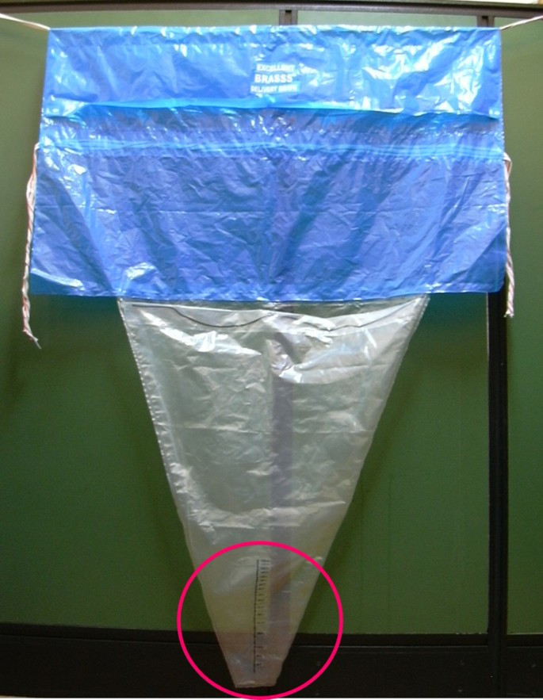

Página 1 · Hemorragia puerperal
“Sangrou demais?”: a régua que mente
Uma mulher de 36 anos, do lar, multípara, chega ao puerpério imediato depois de um parto que já vinha difícil. Tinha diabetes gestacional e polidrâmnio — o útero ficou superdistendido, esticado além do habitual. O parto foi operatório, com fórceps, indicado por exaustão materna, e ela recebeu ocitocina durante a dilatação. A placenta saiu completa, mas demorou: 45 minutos de secundamento. Cerca de uma hora depois, o quadro virou — sangramento vaginal volumoso, hipotensão e taquicardia. O acadêmico de plantão fez o certo de largada: iniciou reposição volêmica e chamou o plantonista. Mesmo com massagem uterina, ocitocina e derivado de ergotamina (ergotrate/metergin), o sangramento persistiu. Guarde essa paciente. Cada detalhe que parece rotina — o polidrâmnio, o fórceps, os 45 minutos, a ocitocina no trabalho de parto — é uma peça que vai ser cobrada no fechamento.
Por que a régua dos 500 mL mente
Durante muito tempo se decorou hemorragia puerperal como um limite de volume: passou de tanto, é hemorragia. O conceito evoluiu para algo mais lógico e mais funcional. Hemorragia puerperal, hoje, é o sangramento que chega a gerar sinais e sintomas de hipovolemia. Repare no que isso muda: a maioria absoluta das puérperas de parto vaginal sangra e, mesmo assim, deambula, amamenta e vai embora sem intercorrência nenhuma. O que define a emergência não é o número no balde — é o momento em que o sangramento derruba a paciente: hipotensão, taquicardia, o corpo sinalizando que perdeu volume demais. Foi exatamente o que a paciente do caso fez.
O número que ainda vale — e por que a banca cobra os dois
Aqui mora a primeira armadilha. A definição volumétrica não virou história morta: perda maior que 500 mL no parto vaginal ou maior que 1 litro (1000 mL) na cesariana segue sendo número corrente. A diretriz brasileira vigente não descartou o volumétrico — ela soma as duas leituras numa única frase: hemorragia é perder acima de 500/1000 mL ou ter qualquer sangramento que cause instabilidade hemodinâmica, tudo dentro das primeiras 24 horas. Por isso a banca cobra os dois conceitos, e quem sabe só um deixa metade das questões em aberto.

O drape obstétrico com bolsa coletora calibrada transforma “perda sanguínea” em volume mensurável à beira-leito: compressas e lençóis levam à subestimativa; a régua da bolsa concretiza os marcos de 500 e 1000 mL.
Ambardekar S. et al. Calibrated delivery drape vs indirect gravimetric technique, BMC Pregnancy and Childbirth 14:276 (2014), Fig. 1. Licença CC BY 2.0 · fonte
A reserva que mascara
Por que a gestante aguenta sangrar tanto antes de instabilizar? Porque a gravidez a preparou. A volemia aumenta de forma expressiva ao longo da gestação — quase 50%. Esse ganho fisiológico funciona como um tanque com folga: a mulher pode perder um volume considerável no parto e ainda manter a pressão de pé por um tempo, porque estava “abastecida” acima do normal. É uma faca de dois gumes. A reserva protege, mas também mascara: a perda inicial não derruba a PA de imediato, e quem estima o sangramento “no olho” se ilude achando que está tudo bem enquanto o tanque esvazia por baixo.
Quando o corpo já respondeu
Isso leva a um raciocínio que resolve questão: na paciente que já instabilizou, você não precisa medir volume nenhum para saber que a perda foi grande. Se ela está hipotensa e taquicárdica, presume-se que o sangramento já ultrapassou os limites históricos — o corpo dela sinalizou o excesso antes de qualquer estimativa de balde. A instabilidade é a prova de que os 500/1000 mL ficaram para trás.
Precoce ou tardia — e o sinônimo que a banca troca
Por fim, a hemorragia puerperal se divide no tempo. A precoce, também chamada primária, acontece nas primeiras 24 horas — é onde está a maioria dos casos, e a maioria dos casos graves. A tardia, ou secundária, vem depois das 24 horas (até 6 a 12 semanas do parto) e é bem menos provável. Fixe os dois pares de rótulos, porque a banca alterna de propósito: precoce = primária; tardia = secundária. Esse sinônimo volta a valer no fechamento, quando o Caso 3 for classificado exatamente por aqui.
Primeiras 24 h
A maioria dos casos — e a maioria dos casos graves.
Após 24 h
Até 6–12 semanas do parto — bem menos provável.
Quiz — fixação
Puérpera de parto vaginal, 1 hora pós-parto, sangramento moderado persistente, PA 88×54 mmHg, FC 118 bpm. A estimativa de perda até o momento é de “cerca de 450 mL”. Qual a melhor conduta conceitual?
- B — a virada. O conceito que manda é o funcional: sangramento que gera instabilidade é hemorragia, independentemente do balde. E há uma segunda camada — a estimativa “no olho” quase sempre subestima, e a reserva de +50% mascara a perda; se ela já está hipotensa e taquicárdica, o corpo já avisou que o volume real ultrapassou os limites históricos.
- A. Trata os 500 mL como gatilho único e absoluto — decorar só a régua antiga e ignorar que a instabilidade define hemorragia sozinha. É confiar mais no número estimado do que na paciente à sua frente.
- C. O corte de 1000 mL é da cesariana, não do parto vaginal — e ainda assim seria só o critério volumétrico, ignorando o funcional. Troca a via de parto para confundir o número.
- D. Inverte os cortes (1 litro é cesárea; vaginal é 500 mL) e ignora o critério de instabilidade. Dupla armadilha: número trocado + conceito funcional esquecido.
Sobre a subdivisão temporal da hemorragia puerperal, assinale a correta:
- B — a virada. Precoce = primária = primeiras 24 h = maioria (e maioria dos graves). É o par que a banca quer que você domine, porque é onde a emergência realmente mora.
- A. Troca o par: tardia pareia com secundária; primária pareia com precoce. Embaralhar os sinônimos é exatamente o que a banca faz de propósito.
- C. A secundária/tardia (>24 h) é a menos provável. Marcar isso confunde “existe” com “é frequente”.
- D. Precoce é definição temporal (quando), não de volume (quanto). Associar precoce a “pouco sangue” mistura os dois eixos de classificação.
A paciente do caso já instabilizou e o sangue não para. Antes de descobrir por que ela sangra, as mãos precisam agir — a estabilização corre em paralelo à investigação, e existe uma ferramenta de decisão rápida que diz quando abrir o protocolo de transfusão.